Séquence 2
II. La récursivité
Cours
Introduction
Les poupées russes ou matriochkas sont des séries de poupées de tailles décroissantes placées les unes à l'intérieur des autres. Elles sont toutes identiques, ne différant que par leur taille. La dernière est différente, dans le sens où elle ne contient pas d'autre poupée à l'intérieur.
Une matriochka est une structure récursive : c'est une matriochka pleine, OU bien une matriochka contenant une autre matriochka plus petite.
A. Définition
Une fonction récursive est une fonction qui s’appelle elle-même.
Pour éviter que cette fonction s’appelle à l’infini, il faut :
- qu’elle ait un cas de base (c'est le cas le plus simple à résoudre), aussi appelé condition d'arrêt (dans laquelle il n'y a plus d'appel récursif donc la fonction s'arrête),
- qu’elle se ramène vers ce cas de base, donc qu'il y ait un appel à elle-même sur un plus petit problème que le problème initial (un entier plus petit, une chaîne de caractère plus courte, etc).
B. Fonctionnement d'une pile d'exécution
B.1. Cas général
Lors de l’appel d’une fonction, le système sauvegarde différents paramètres comme ses arguments et les variables utilisées à l’intérieur de celle-ci. C’est son contexte d’exécution. Cela permet d’interrompre l’exécution d’une fonction lorsque celle-ci en appelle d’autre, et de reprendre son exécution ensuite.
Exemple :
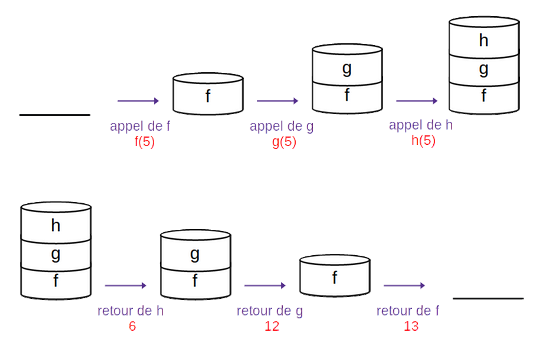
def h(x):
return x + 1
def g(x):
return h(x) * 2
def f(x):
return g(x) + 1
B.2. Cas récursif
Une fonction récursive est une fonction dans laquelle il y a des appels de fonctions, avec la particularité qu'il s'agit de la même fonction. La même chose se produit donc : une pile d’exécution est utilisée pour stocker le contexte d’exécution de ses différents appels.
Prenons l'exemple classique du calcul de \(2^n\) :
def puissance(n) :
if n == 0 :
return 1
else :
return 2*puissance(n-1)
Ecrire le calcul de puissance(3) :
puissance(3) = 2 * puissance(2)
puissance(2) = 2 * puissance(1)
puissance(1) = 2 * puissance(0)
puissance(0) = 1
puissance(3) = 2 * 2 * 2 * 1 = 8
Le schéma suivant explique le processus en terme de pile d’exécution : 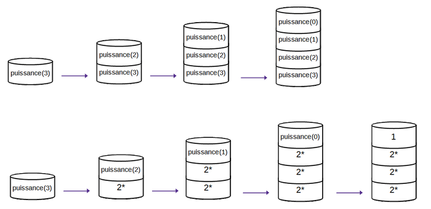
B.3. Cas limite
La pile d’exécution a une taille maximale. Lorsque la pile déborde - "stack overflow" - (par défaut au bout de 1000 appels), Python renvoie le message suivant :
RecursionError: maximum recursion depth exceeded while calling a Python object
C. Récursivité et paradigmes
Le paradigme récursif s’oppose généralement au paradigme itératif. Ce dernier est une sous-catégorie du paradigme impératif et fait référence à l’utilisation de boucles.
Avec la récursivité, on peut se passer de boucles. C’est cette méthode de programmation qui les remplace lorsque l’on programme en utilisant le paradigme fonctionnel.
Exercices
Les exercices traitent d'abord d'algorithmes qui manipulent des entiers, puis des chaînes de caractères (et des listes en bonus).
Exercice 1 : factorielle
La fonction factorielle, appliquée à un entier \(n\) est notée \(!n\) et est définie de la manière suivante :
- \(!0 = 1\)
- \(!n = 1*2*...*(n-1)*n\)
- Exprimer \(!n\) en fonction de \(!(n-1)\).
- En déduire une fonction
factorielle(n)calculant la valeur de!npour tout entiern. - Vérifier que
factorielle(5)renvoie bien la valeur120etfactorielle(7)la valeur5040. - Dessiner la pile d'exécution pour l'appel de
factorielle(4). - Vérifier votre travail en visualisant l'exécution de votre code avec https://pythontutor.com/visualize.html
Exercice 2 : la suite de Fibonacci
La suite de Fibonacci est définie comme suit :
- \(u_0 = 0\) et \(u_1 = 1\)
- \(u_n=u_{n-1}+u_{n-2}\)
1. Écrire une fonction récursive fib_rec(n) qui donne le nième terme de la suite de Fibonacci.
2. Représenter les appels récursifs de fib_rec(5) sous la forme d’une structure hiérarchique, puis sous la forme d’une pile.
Exercice 3 : palindromes
Un palindrome est un mot pouvant se lire à l'endroit comme à l'envers, comme "été" ou "radar".
On veut écrire une fonction palindrome prenant en entrée une chaîne de caractère mot et renvoyant un booléen indiquant si ce mot est un palindrome ou non.
- Les cas de base sont les cas où
motest de longueur 0 ou 1. Que doit renvoyer la fonction dans ces cas ? - Dans tous les autres cas,
motest un palindrome si :- la première et la dernière lettre du mot sont identiques,
- le reste du mot (sans la première et la dernière lettre) est un palindrome. Sur quelle valeur l'appel récursif se fait-il ?
- Ecrire la fonction
palindromeincluant ces différents cas.
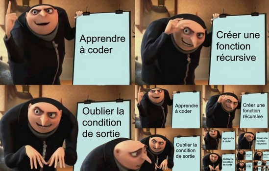
Pour aller plus loin...
Exercice 4 : somme d'une liste
Une fonction récursive appliquant un traitement sur une liste fonctionne de la même manière qu'avec un entier : il faut, à chaque nouvel appel, réduire le problème. C'est-à-dire ici, réduire la liste initiale (par exemple considérer la même liste à laquelle on a enlevé le premier élément).
- Ecrire une fonction itérative (utilisant une boucle) permettant de calculer la somme des éléments d'une liste de nombres
somme_it(liste). - Pour quelle valeur de la liste est-il le plus facile de faire ce calcul, et que vaut-il dans ce cas ? (état trivial)
- Pour prendre une partie d'une liste Python, on peut faire ce qu'on appelle du slicing, c'est-à-dire un découpage de la liste entre deux indices : pour une liste
l, on peut choisir de considérerl[i:j]qui prendra les éléments deiàj-1del.- En déduire comment prendre tous les éléments d'une liste sauf le premier.
- En déduire l'appel récursif de la fonction
somme_recqui sera fait pour faire le calcul de la somme d'une liste de manière récursive.
- Ecrire la fonction récursive
somme_rec(liste).
TD : Les tours de Hanoï
Introduction
Le jeu des tours de Hanoï consiste à déplacer une pile de disques, de taille différente, d'une tige de départ (à gauche) à une tige d'arrivée (tout à droite) en respectant la règle suivante : un disque ne peut être placé sur un autre disque de plus petite taille.
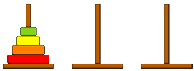
A. Du cas particulier au cas général
-
Comment résoudre le problème pour 2 disques ? (le représenter sur le schéma ci-dessous) 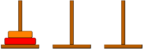 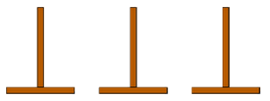
-
Résoudre le problème pour 3, 4 et 5 disques grâce à cette simulation : http://championmath.free.fr/tourhanoi.htm
-
On considère une pile de
ndisques, et on suppose que l'on sait résoudre le problème pourn-1diques. Représenter les étapes permettant de déplacer lenème disque et la pile den-1disques (qui se déplace en entier, on suppose qu'on sait le faire), de manière à résoudre le problème : 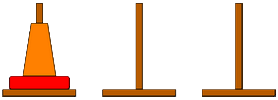 -
Récapituler les trois étapes de résolution du problème :
- Etape 1 :
- Etape 2 :
- Etape 3 :
B. Algorithme
Pour résoudre le problème pour n disques, on fait appel, 2 fois, à la résolution du problème pour n-1 disques. Nous allons donc utiliser un algorithme récursif.
On propose le pseudo-code suivant :
fonction Hanoi(n, dep, inter, arr)
''' Affiche les déplacements pour résoudre le problème de Hanoï pour n disques
Entrées :
n : entier représentant le nombre de disques à déplacer
dep, inter, arr : caractères indiquant les sommets de départ,
intermédiaire et d'arrivée
'''
Si n est égal à 0
retourner Rien
Sinon
Hanoi(.........................)
afficher le déplacement depuis dep jusqu’à arr
Hanoi(.........................)
Compléter le pseudo-code avec les bons paramètres pour les appels récursifs à la fonction Hanoi.
C. Implémentation
- Ecrire l'implémentation en Python de cet algorithme ci-dessous :
N.B.: Pour l'affichage, on peut utiliser une instruction du type :
print("Déplacer le disque ", str(n), "de la tige ", dep, " vers la tige ", arr)
- Pour visualiser ce qu'il se passe, compléter le fichier Python fourni (sur l'ENT).
TP : Dessiner des fractales
Une fractale est un objet qui apparaît identique à différentes échelles : en "zoomant" sur une partie de la figure, on retrouve la figure initiale. On peut représenter une version approchée des fractales avec des programmes récursifs, dont on défini le niveau de récursion (donc le niveau de détails de la figure).
1. Des bulles
Le code suivant (accessible sur l'ENT) permet de dessiner une figure avec des bulles. Il utilise la bibliothèque turtle dont des éléments de documentation sont donnés dans le fichier.
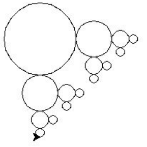
from turtle import *
def dessine_cercle(x, y, r):
up()
goto(x,y-r)
down()
circle(r)
return None
def bubble(n, x, y, r):
if n == 0:
return None
else:
dessine_cercle(x,y,r)
bubble(n-1, x+3/2*r, y, r/2)
bubble(n-1, x, y-3/2*r, r/2)
return None
bubble(4,-100,100,50)
done()
-
Exécuter le code. Faire varier la valeur de
npour augmenter le niveau de détails de la figure. -
Identifier les appels récursifs de la fonction
bubble.- Quel paramètre permet de réduire la taille des bulles au fur et à mesure ?
- Quels paramètres changent la position de la tortue ?
- La variation de quel paramètre nous assure que l'algorithme va se terminer ?
2. Le flocon de von Koch
Le flocon de Von Koch est une des premières courbes fractales à avoir été décrite. Elle a été inventée en 1904 par le mathématicien suédois Helge von Koch. Voici une partie de ce flocon : 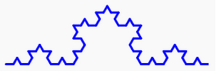
2.A. Principe
- On commence par un segment de longueur
a. - On coupe ce segment en 3 parties égales.
- On remplace le segment central par un triangle équilatéral de côté
a/3. - Chaque segment de longueur
a/3est lui-même découpé en 3 parties égales (chacune de longueura/9). - On remplace chaque partie centrale par un triangle équilatéral de côté
a/9. - etc.
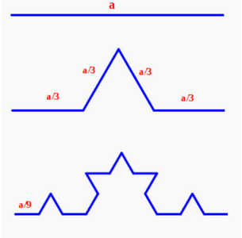
2.B. Algorithme
Nous allons utiliser un algorithme similaire à celui qui permet de tracer le motif avec les bulles pour dessiner ce flocon. Compléter l'algorithme proposé :
fonction fragment_flocon(n, cote):
ENTREES :
n : entier indiquant le nombre d’itération à faire
cote : la longueur du segment initial
Si n est égal à 0 alors
On trace le segment de longueur cote
Sinon
On appelle la fonction fragment_flocon avec les paramètres __________
On tourne de _____ degrés sur la _______________
___________________________________________________
__________________________________________
___________________________________________________
__________________________________________
___________________________________________________
2.C. Implémentation
-
Implémenter l'algorithme en Python permettant de dessiner une partie du flocon.
-
Ecrire la fonction
flocondessinant le flocon en entier. 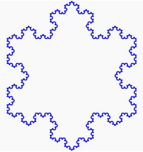